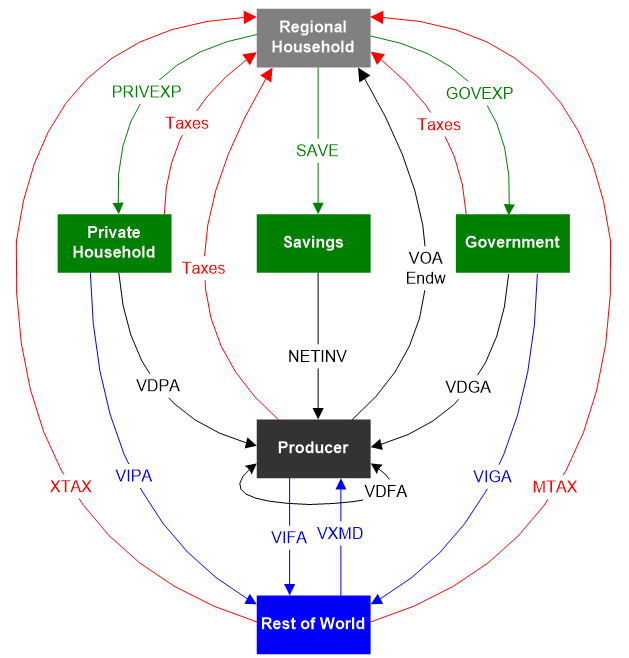
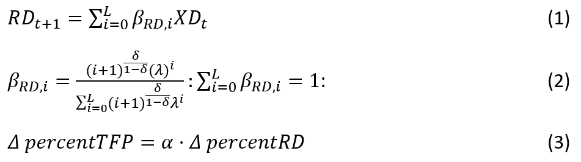

GTAP-InVEST User Guide
1. Introduction
This is the User Guide for GTAP-InVEST, a new earth-economy model introduced in “Investing in nature can improve equity and economic returns” (Johnson et al. 2023, PNAS). The content here originally derived from the supplemental information document included with PNAS article. However, development on the model is progressing rapidly, so please refer to this document, which will remain up-to-date. For additional details, please see the GTAP-InVEST Github repository (github.com/jandrewjohnson/gtap_invest). All code and results of the model are available and licensed under a permissive open-source license. Full results may be downloaded at justinandrewjohnson.com/gtap_invest/results.
2. GTAP-InVEST Model Summary
In this section, we describe how we link together the models that underlie GTAP-InVEST and discuss the new elements added to each model to make this possible. This section assumes the reader is familiar with the underlying GTAP and InVEST models. If this is not the case, see Sections 4 and 5, which document these two models in more depth.
2.1. Overall model structure
GTAP-InVEST is based on several existing models, though a number of new advances were necessary to make the model linkage. These necessary advances fall into two categories: 1. modifications of the underlying models so that they compute what is needed by the other models; and 2., creation of “linkage” code that expresses the outputs of one model as inputs to another model. Figure S.2.1 summarizes the overall structure of the model.
Figure S.2.1: Overall model linkages within GTAP-InVEST
The first step in the model is to project how the economy will evolve between the base year and the terminal year while ignoring impacts from ecosystem services. We refer to this as GTAP Run 1 or the “economic projections run.” It is summarized in Column 1 of Figure S.2.1 (see SI Section 3 for details on the exact input assumptions). The economic projections run calculates a business-as-usual scenario to 2030 that does not yet account for ecosystem services (we label these results as BAU-noES throughout). Because many of the policies rely on detailed consideration of how changing market forces will endogenously drive land-use change and conversion of natural land into economically-utilized land, the GTAP model has expanded representation of heterogeneous land and can endogenously calculate land-use change at the GTAP-AEZ scale. See Section 2.2.3 for a description of how we created this new version of GTAP-AEZ. The results of GTAP Run 1 provide projections of regional land-use change for cropland, pastureland, managed forests and natural land. The next step in GTAP-InVEST is to downscale these regional results (Column 2) using the Spatial Economic Allocation Landscape Simulator (SEALS) from 341 regions to 8.4 billion grid-cells (10 arc-second resolution, or roughly 300 meters at the equator). This is necessary because the models of biodiversity and ecosystem services we used, specifically the Integrated Valuation of Ecosystem Services and Tradeoffs (InVEST) model, require very high-resolution data to capture local dynamics (Column 3). Finally, the outputs of InVEST are fed back into a second run of the economic model (Column 4), referred to as the GTAP Run 2, or the “ecosystem services impact run.” Run 2 assesses how changes in ecosystem services will have feedback effects on the 2030 economy. In our results, outputs from this second run are labeled with “allES” (or “aES” for short-name variables) to denote that the impacts on the economy from changed ecosystem services are now included. The difference between GTAP Run 1 and Run 2 identifies how much ecosystem services matter (see Figure 1 in the manuscript). The outputs of GTAP Run 2 provide detailed macroeconomic results described in figures 1-3 of the manuscript and in section 7 of this supplemental information.
2.2. Input Assumptions
The primary source of inputs for assumptions on exogenous drivers come from the Shared Socioeconomic Pathway (SSP) framework from Riahi et al. (2017) and the associated Representative Concentration Pathways (RCPs), such as for population and global surface temperature change (Figure S.2.2). We take population change, technology change (represented as total-factor productivity projections) and other exogenous factors from the literature, following the approach documented in a special issue of the Journal of Global Economic Analysis (Dellink et al., 2020).
Specifically, these economic drivers include future growth rates for key economic factors, namely Real GDP, Capital Stock, Population, Unskilled Labor and Skilled Labor from Econmap (v2.4) (Fouré et al., 2013) based on the SSP2 scenario. Sector specific productivity growth for Crops, Ruminants and Non-Ruminants are based on per annum growth rates from Ludena et al (2007) over 2001-2040. Because Ludena et al (2007) does not estimate the growth of the managed forestry sector, we infer growth in this sector based on global agricultural productivity growth as defined in Ludena et al (2007). We impose a 2% productivity growth rate for the Manufactures sector to reflect the productivity gap between the Manufactures and Service sectors (Chateau et al., 2020).

Figure S.2.2: Input Assumptions from the Shared Socioecononomic Pathways. Source: IIASA (2015). SSP Database 2012-2015. Preliminary scenarios. Note:Available from https://tntcat.iiasa.ac.at/SspDb
2.3. GTAP-AEZ economic methods
The variant of the GTAP model that we use as the starting point for our model extensions is GTAP-AEZ, which builds on the standard model and database by introducing competition for land resources across crops, pasture, and forestry, as well as heterogeneous land use and land endowments within each region and within each Agro-Ecological Zone (AEZ) suitable for a sector’s use. The AEZs are defined in terms of 60 day-long length-of-growing periods, of which there are six, each differentiated by climatic zone (tropical, temperate and boreal). We derive AEZ-level crop production information from Monfreda et al. (2008), while managed forest sector production is based on Sohngen et al. (2009). We draw on multiple sources for land cover information. We use cropland and pasture cover data from Ramankutty et al (2008), urban land cover data from Schneider et al (2009, 2010) and potential vegetation information from Ramankutty (1999). The GTAP-AEZ database is updated to the latest version of the standard GTAP database using national level data from FAOSTAT following the methods described in Baldos (2017). One purpose for defining AEZs is that it lets us specific region-specific endowments of land, which are used by producers as an input to production.
Figure S.2.3.1 shows the modified production structure in the GTAP AEZ. Note that these changes are limited to managed forestry, ruminant livestock and crops sectors - sectors that use land endowments. Following the standard GTAP model, we estimate sectoral output using a constant elasticities of scale (CES) production structure which minimizes cost of production by combining intermediate and value-added inputs. The former are raw commodity inputs used in the production process while the latter includes factors such as land, labor, capital and natural resources. Our model combines skilled and unskilled labor, land, capital and natural resources under the value-added input CES sub-nest, with land endowments in across AEZs pooled under the land input CES sub-nest. Supply of land across each crop sectors and across land cover types are illustrated in Figure S.2.3.2.

Figure S.2.3.1. Production structure in GTAP-AEZ

Figure S.2.3.2. Land supply in GTAP-AEZ
In the model, the regional household owns land endowments and maximizes total returns to land by allocating their endowment across different uses. Starting at the bottom of the constant elasticity of transformation (CET) function land supply nest (Figure S.2.3.2), the regional household allocates the land endowment within its AEZ to managed forestland, cropland and pastureland based on maximizing returns to land. Managed forestland represents land endowments for the forestry sector, while the ruminant livestock sector uses pastureland. Within the crops sector, the household can allocate available cropland for use in the production of each 8 GTAP crop aggregates, depending on changes in land rents for each use. The model computes returns to land endowments based on the cost shares in the database.
2.3.1. Modifications of GTAP-AEZ
In the original GTAP-AEZ model, we assume the supply of land in each AEZ is fixed, though different sectors are able to compete over how land will be used. This means that additional land demanded by one sector needs to come from other sectors. Although this method represented a great advance in the literature on making computable general equilibrium (CGE) models accurately represent land conversion, it is limited in its ability to assess new land being brought into economic use, converted from natural land cover. Our primary modification of GTAP-AEZ in this paper was to add land supply curves, uniquely identified and parameterized for each AEZ-Region, in order to endogenize land supply in the GTAP-AEZ model. Following the approach of Eickhout et al (2009), which the MAGNET model also uses (Woltjer and Kuiper, 2014), land supply in each AEZ is defined as a function of real land rental rates as well as an asymptote which captures maximum available land for use:
The alpha and beta parameters are taken directly from Woltjer and Kuiper (2014) and the maximum land available is calculated as described below. Using this specification, land supply increases when there are positive increases in land rents. Likewise, if land rents fall, then the supply of land also declines, and we assume that any land not being used is allocated back to natural cover. With this specification, it is possible to set aside land for natural use by reducing the maximum area of available land, as long as these reductions are relatively small (see Dixon et al. 2012).
The determination of maximum arable land is very important in this structure. Many existing approaches exist in the literature for defining arable land (e.g., from the Food and Agriculture Organization, but also from the authors of the MAGNET model (Woltjer et al. 2014)). In this paper, we updated the land-supply curves using more recent and higher resolution data on available land. We calculated this using 300 meter resolution data with global availability. In this approach, we also improved the consistency in land-use availability between the competing uses of cropland, pastureland and managed forest land.
Specifically, GTAP-InVEST calculates the land-supply curve for each region using the following approach. We combined data on soil suitability and soil-based growth constraints (Fisher et al., 2008), existing crop caloric yield on nearby areas (Johnson et al. 2016), topographic roughness (authors’ calculations, based on data from Hijmans et al. 2008), and existing LULC (based on the European Space Agency’s Climate Change Initiative data, henceforth the ESACCI). For the soils data, which are based on the Harmonized World Soils Database, the method excluded any land that had constraints worse than class 4 (where 1 is unconstrained and 7 is completely constrained). After eliminating land based on soil constraints, the methodology then further excluded the following areas: land that had less than 20 billion kilocalories produced within the 5 km of the target cell, land that had a topographic roughness index greater than 20, and land with an overall crop suitability lower than 30 percent. Finally, the methodology excluded urban, water, barren, ice and rocky land-use types. See the GTAP-InVEST GitHub repository for more details. This process resulted in AEZ-Region specific values as presented in the supplemental file land_supply_parameters.csv.
To download the full defintitions of the 18 AEZs, 37 aggregated GTAP regions and the corresponding ISO3 codes as a vector file (.gpkg), see here GTAP37_AEZ18_ISO3
2.4. SEALS downscaling methods
In order to analyze ecosystem services, we need to know where within the country the specific changes happen with sufficiently high-resolution data. To enable this, we downscale the regional projections of change produced by the GTAP Run 1 model to a fine (10 arc-second, ~300m) resolution using the Spatial Econometric Allocation Landscape Simulator (SEALS, published in Suh et al. 2020 and extended in Johnson et al. 2020, 2021).
To generate useful results, we also ensured that our downscaled results were consistent with medium-resolution land-use change products currently being used by the global sustainability community. Specifically, we used results reported by the Land-Use Harmonization 2 (LUH2), which provides yearly measures of land-use change for 13 classes under each of 5 different Shared Socioeconomic Pathway (SSP) scenarios used by IPBES, reported at a medium (30km) resolution. We combined the LUH2 data with the AEZ-Region results from GTAP Run 1 by scaling the medium resolution LUH2 data up/down in each AEZ-Region so that (1) the total exactly matched that projected by GTAP Run 1 and (2) within the AEZ-Region, the spatial distribution at the medium resolution matched that of the LUH2 data. See Johnson et al. (2023) for more details along with the code documenting this calculation in the GTAP-InVEST repository.
These results that combine the GTAP-AEZ projections with the LUH2 data, however, are still not at a fine enough resolution to be used in the InVEST ecosystem service tools. Thus, we used SEALS to downscale from the combined 30km LULC data described above to the necessary 300m resolution. Figure S.2.4.1 illustrates how SEALS downscales the medium resolution data to the finer scale. Specifically, the top panel of the figure shows the spatial distribution of five LUC transitions in the LUH2 data, focusing on grassland conversion, and then zooms in to show which 300m grid-cells change in the downscaled data. The bottom panel shows the projections for agricultural land-use change but illustrates both the contraction (brown) and expansion (green) that happens on the landscape. Note that while initially SEALS modeled the expansion of single land-use types, such as maize expansion (Suh et al. 2020), we expanded from the algorithm defined in Suh et al. so that the SEALS model can consider all land-use changes simultaneously.

Figure 2.4.1: Downscaling using the SEALS model
2.4.1. Allocation Algorithm
We report a simplified explanation of the SEALS algorithm for convenience, drawn from previous publications. See the specific publications for more details (e.g., Suh et al. 2020, Johnson et al. 2020, 2021). SEALS uses a simplified LULC classification scheme that is a hierarchically-defined subset of the ESACCI classes (ESA, 2017).The simplification was used because many relationships were not statistically different among similar class specifications (e.g., between deciduous broadleaf and deciduous needle-leaf forests).
| SEALS LULC Types | id | Combined ESA LULC Types |
| Urban | 1 | 190 |
| Cropland | 2 | 10, 11, 12, 20, 30 |
| Pasture/Grassland | 3 | 130 |
| Forest | 4 | 40, 50, 60, 61, 62, 70, 71, 72, 80, 81, 82, 90, 100 |
| Non-forest vegetation | 5 | 110, 120, 121, 122, 140 |
| Water | 6 | 210 |
| Barren or Other | 7 | 150, 151, 152, 153, 160, 170, 180, 190, 200, 201, 202, 210, 220 |
| No-data | 255 |
Table S.2.4.1: ESA LULC simplification scheme
SEALS allocates land-use change by identifying the net change of each LULC class required in each coarse region, then identifying a net change vector , where each entry represents the net change for the i-th land-use type in the coarse cell. The allocation algorithm then takes an n by i matrix of coefficients for how each n-th spatial input affects the probability of i-th expansion in each grid-cell. We provide an example of the table and specification of the functional forms in Table A-4.2. The coefficients actually used are obtained by iteratively solving the allocation algorithm to search for the parameters that minimize the difference between observed change and projected change.
SEALS Allocation Algorithm

2.4.2 Coefficients used
Table S.2.4.2. defines the specific coefficients used. These were established using the calibration algorithm described in the next section, averaging calibrated coefficients from 10 different sampled regions.
| spatial_regressor_name | type | class_1 | class_2 | class_3 | class_4 | class_5 |
| class_1_constraint | multiplicative | 0 | 0 | 0 | 0 | 0 |
| class_2_constraint | multiplicative | 1 | 0 | 1 | 1 | 1 |
| class_3_constraint | multiplicative | 1 | 1 | 0 | 1 | 1 |
| class_4_constraint | multiplicative | 1 | 1 | 1 | 0 | 1 |
| class_5_constraint | multiplicative | 1 | 1 | 1 | 1 | 0 |
| class_6_constraint | multiplicative | 0 | 0 | 0 | 0 | 0 |
| class_7_constraint | multiplicative | 1 | 1 | 1 | 1 | 1 |
| class_1_binary | additive | 0 | -0.032222222 | 0.013888889 | -0.013888889 | -0.016666667 |
| class_2_binary | additive | -0.027777778 | 0 | 0.016666667 | 0.011111111 | 0.004333333 |
| class_3_binary | additive | 0.005555556 | 0.018888889 | 0 | 0.041666667 | -0.026111111 |
| class_4_binary | additive | -0.019444444 | -0.016666667 | -0.002666667 | 0 | 0.033444444 |
| class_5_binary | additive | 0.01 | 0.144444444 | 0.060111111 | 0.02 | 0 |
| class_6_binary | additive | 0 | 0 | 0 | 0 | 0 |
| class_7_binary | additive | -1.119444444 | 0.001666667 | 0.126666667 | 0.061111111 | -0.023333333 |
| class_1_gaussian_1 | gaussian_parametric_1 | 1.713888889 | -1122.233444 | -11.13055556 | 0.041666667 | -1122.241667 |
| class_2_gaussian_1 | gaussian_parametric_1 | 0.105555556 | 0.333444444 | 0.022222222 | 0 | -11.24444444 |
| class_3_gaussian_1 | gaussian_parametric_1 | 0.054444444 | 0.005444444 | 0.38 | 0.018222222 | 0.085555556 |
| class_4_gaussian_1 | gaussian_parametric_1 | -0.122222222 | 1111.065556 | -0.011 | 0.276666667 | -0.022233333 |
| class_5_gaussian_1 | gaussian_parametric_1 | 0.010888889 | 0 | 0.019444444 | -0.122222222 | 0.466666667 |
| class_6_gaussian_1 | gaussian_parametric_1 | 0.036555556 | -112.2027778 | -112.24 | -1.105555556 | -1133.322333 |
| class_7_gaussian_1 | gaussian_parametric_1 | -0.127777778 | -112.2555556 | -1112.144444 | -1111.133333 | 0.005555556 |
| class_1_gaussian_5 | gaussian_parametric_1 | -0.072222222 | -11.52222222 | -111.2638889 | -0.093333333 | -0.087777778 |
| class_2_gaussian_5 | gaussian_parametric_1 | 0.068888889 | 0.162333333 | -0.016666667 | 0.122222222 | 0.065555556 |
| class_3_gaussian_5 | gaussian_parametric_1 | 0.100222222 | -0.025 | 0.431111111 | -0.026677778 | -0.041666667 |
| class_4_gaussian_5 | gaussian_parametric_1 | 0.133222222 | 0.367777778 | 0.076333333 | 0.281777778 | 0.113333333 |
| class_5_gaussian_5 | gaussian_parametric_1 | 0 | -0.073111111 | 0.024444444 | -0.005555556 | 0.152777778 |
| class_6_gaussian_5 | gaussian_parametric_1 | 0.091666667 | 0.005 | -1111.105444 | -1.092777778 | -0.002222222 |
| class_7_gaussian_5 | gaussian_parametric_1 | 0.045555556 | 0.15 | -1111.077778 | -0.008333333 | -110.89 |
| class_1_gaussian_30 | gaussian_parametric_1 | -0.066666667 | -0.073333333 | 0.077777778 | -0.026111111 | 0 |
| class_2_gaussian_30 | gaussian_parametric_1 | 0.011111111 | 0.034888889 | -0.081666667 | -0.016666667 | -0.037777778 |
| class_3_gaussian_30 | gaussian_parametric_1 | -0.017222222 | -0.006 | 0.308333333 | 0.009444444 | 0.024333333 |
| class_4_gaussian_30 | gaussian_parametric_1 | -0.016111111 | 0.155555556 | 0.108888889 | 0.056777778 | 0.153444444 |
| class_5_gaussian_30 | gaussian_parametric_1 | 0.005555556 | -0.021111111 | 0.137222222 | 0.143444444 | 0.105555556 |
| class_6_gaussian_30 | gaussian_parametric_1 | -0.021111111 | 0.036555556 | 0.152444444 | 0 | 0.055555556 |
| class_7_gaussian_30 | gaussian_parametric_1 | 0.025 | 1109.978889 | 0.204444444 | -1.080555556 | -0.034555556 |
| soil_organic_content_1m_30s | additive | 0.027777778 | -0.15 | 110.9777778 | -111.14 | -0.027777778 |
| bio_12 | additive | 11.11944444 | -0.994444444 | 1.14 | -1.075 | 11.00444444 |
| alt | additive | -0.104444444 | 0.085 | -0.024888889 | -0.037788889 | 0.01 |
| bio_1 | additive | -0.022111111 | 0.044444444 | -0.011111111 | -0.01 | -0.001111111 |
| minutes_to_market_30s | additive | 0.016122222 | 0.21 | 0.005555556 | 1111.077778 | -0.034333333 |
| pop_30s | additive | 0 | 0 | 0 | 0 | 0 |
| bulk_density_1m_30s | additive | 1.15 | 1.122222222 | -0.016666667 | 22.18444444 | -11.1 |
| CEC_1m_30s | additive | 0 | -0.016666667 | 0 | 111.0722222 | 0 |
| clay_percent_1m_30s | additive | -0.051111111 | 0.02 | -0.186111111 | -0.046222222 | 1.084333333 |
| ph_1m_30s | additive | 0 | 0.1 | 0 | 0 | 0 |
| sand_percent_1m_30s | additive | 0.034444444 | 0.018333333 | -0.037777778 | -0.048888889 | -0.001111111 |
| silt_percent_1m_30s | additive | -0.012777778 | -0.165 | 0 | -0.059011111 | -0.146111111 |
Table S.2.4.2. Coefficients used in the SEALS algorithm
2.4.3. Calibration
A key component in SEALS is that it downscales according to observed relationships present in time-series input data. SEALS uses a spatial allocation approach that has been calibrated on the ESACCI 1992-2015 time series using an iterative Gaussian L1-loss function minimization approach. The approach is documented in Figure S.2.4.3.1. as per the following algorithm:
Define a baseline condition (Panel A, using the year 2000 for this example).
Define a projection year in the set of observed years after the baseline year (2010), shown in Panel B, and calculate the net-change between the two years for each coarse resolution (30km) grid-cell. This defines the amount of change in each LULC class that our allocation algorithm will predict.
Allocate the net change of each LULC class using only the baseline map and a spatial allocation algorithm, S(p1), where p1 is the parameter set used in the allocation and is initially set to an arbitrary value.
Calculate how accurate the projected LULC map for 2010 (Panel C) compares to the observed 2010 LULC map. Specifically, calculate the difference score, which is the summation of 5 L1-difference functions, one for each LULC transition, that calculates how different (in terms of Gaussian-blurred distance) each class is in the projected map compared to the observed map. This generates a score for the quality of fit for the current set of parameters (Panel D).
Iteratively for each parameter in p1_i, increase the parameter by X percent (initially 10), rerun step 4 with the new parameter, observe the new similarity score, then decrease it by 10 percent and rerun.
After calculating the change in fit from each parameter increase and decrease in Step 5, identify which change had the greatest improvement in the similarity score. Update the parameter set to include the single best change, and then repeat Steps 3-6 until no additional improvements can be made.
Figure 2.4.3.2. shows more detail on the calibration process, highlighting where specific transitions are projected versus where they actually happen, along with the difference score implied.

Figure 2.4.3.1. SEALS calibration process
Figure 2.4.3.2. Assessment of prediction quality-of-fit for 1 LULC class
2.4.4. Current Limitations within SEALS
Due to the computationally heavy nature of calibration, the calibration was only done on a subset of the input data. Subsequent work can improve this by running on more (or potentially all) regions and applying unique values for each region downscaled, instead of averaging the coefficients.
Additionally, in our downscaling approach, we chose to match exactly the results from the LUH2 project. This had some downsides, such as locating massive agricultural expansion in the northern Sahara. In locations where the change projected by LUH2 is well outside any observed changes, the calibration is not effective, and visible artifacting is present. In these locations, no allocation method based on the sparse observed data is likely to produce realistic outputs unless the underlying input LUH2 data is modified. We chose not to modify the input LUH2 data in these locations in order to stay consistent with existing approaches, though other applications of this data may benefit from versions that modify the input data. Future research directions should include dynamic updating between the coarse and fine resolutions to resolve the underlying problem.
It is also important to note that the modelling outputs (including LULC change maps, InVEST outputs, and GTAP outputs) are not meant to be accurate predictions of future change. Instead, they are illustrations of possible future outcomes given the assumptions used. Furthermore, the modelling approaches used in this project are a first step in exploring how the integration of ecosystem service models (InVEST) and economic models (GTAP) can be connected to help explore the implications of large-scale implementation of global conservation goals, and these methods will be further refined over time.
3. Scenarios and Policy specification
To understand different aspects of the earth-economy linkage, we compare multiple scenarios on different policies, economic assumptions, and conceptions of “business as usual” (BAU). In this section, we report how we used the created model with multiple scenarios to assess various aspects of the earth-economy linkage.
Before running policy-relevant scenarios, our first step was to update the baseline economy from 2014 to 2021 to be closer to the present year. To do this, we ran a “Base Year Calibration” scenario that projects the global economy from Y2014 – the latest reference year of the GTAP v.10 database – to Y2021, which is the base year used in this paper. We then apply all policies and other shocks to this 2021 snapshot of the economy. To generate the 2021 economy, we specified how the exogenous factors in our model would evolve from 2014 to 2021 and then applied them as a shock to the 2014 equilibrium. We use a similar approach for scenarios that proceed to 2030 (represented in Figure S.3.1 as the “Economic Drivers” arrow on the right-hand side).
With the 2021 baseline economy defined, we then define two sets of future scenarios that project from Y2021 to Y2030. Below, we discuss these two sets of scenarios, namely the BAU scenarios (right-hand side of Figure S.3.1) and the Policy Scenarios (left-hand side).

Figure S.3.1: Summary of scenarios and policies analyzed
3.1. BAU scenarios
Our BAU scenarios include “no Ecosystem Services”, “Ecosystem Services”, “Economic Rigidities” and “Ecosystem Collapse” scenarios. To create Figure 1 in the main text, we calculated the difference between the “no Ecosystem Services” scenario, which projects basic economic activity to 2030 but ignores all changes in ecosystem services, and the “Ecosystems Services” scenario, which incorporates shocks to the economy from changes in pollination services, timber carbon stock and fisheries stock. The difference between these scenarios identifies a subset of estimates on “how much nature matters” and gives us as sense of how wrong our calculations can be if we ignore earth-economy linkages.
3.1.1. Economic Rigidity
Our BAU scenarios also consider two important sensitivity analyses. First, in the “Economic Rigidities” scenario, we assess what happens to the economy if it exhibits more rigidity and less substitutability. Specifically, this scenario builds on the “Ecosystem Services” scenario and uses smaller elasticity values for key economic parameters in GTAP-AEZ model. These include: (a) Elasticity of transformation between land cover types, (b) Elasticity of cropland transformation among crops, (c) Constant elasticity of substitution (CES) between primary factors in production, (d) Armington CES for regional allocation of imports and (e) Armington CES for domestic/imported allocation. We obtain lowers bound of the 95% confidence intervals for the Armington CES for regional allocation of imports and Armington CES for domestic/imported allocation based on adjusted estimates from Hertel et al (2007) and Hertel et al (2006) respectively. For the other parameters, standard values are deflated by 50%.
3.1.2. Ecosystem Collapse
We also analyzed what happens to the economy under an “Ecosystem Collapse” scenario, which analyzes very large changes in ecosystems services rather than just small shocks from currently projected land-use change, as analyzed in the main manuscript. These ecosystem collapse shocks are a highly simplified representation of what might happen when key relationships in the ecosystem pass ecological tipping-points. We draw from the tipping-point scenarios defined in the Dasgupta Review of the Economics of Biodiversity (2021, pp. 375, Box 14.3), which used an earlier version of the GTAP-InVEST model. The three specific elements shocked in the collapse scenario are widespread dieback of tropical forests, collapse of wild pollinator populations, and severe losses in marine fishery populations.
A large body of literature suggests that regime changes may happen because large parts of the biosphere are close to tipping points (Rockström et al. 2009; Steffen et al. 2015). According to these studies, it is possible that when some (probably unknown) ecological thresholds are passed, it might trigger large, non-linear, systemic change in the health of entire ecosystems. It is extremely challenging to predict when tipping points might be crossed. Instead, these results are not predicted to happen at some specific point in time, but are presented to explore scenarios and economic implications of large-scale ecological change. We suggest that our readers interpret these results with some caution because the exact thresholds are unknown and what happens beyond the threshold remains poorly understood, especially at large spatial scales (Lenton 2013).
Conceptually, it is important to consider such non-linear changes and estimate how they might have further, possibly non-linear, effects in the economy. Traditional CGE models ameliorate many negative impacts to some degree by substitution away from affected sectors. However, it might be the case that such substitution is limited in overall quantity and that very large changes could cause decreased flexibility within the economy, amplifying negative effects. We discussed this possibility above in our section on economic rigidity.
To determine which tipping points we wanted to assess, we reviewed the “Regime Changes” database produced by the Stockholm Resilience Center[1]. We identified three scenarios that we were able to evaluate in GTAP-InVEST. These include assessing wide-spread collapse of tropical forests that results in forests converting into grasslands and shrubs, global pollinator collapse, and climate-related reductions in fisheries output.
We define the specific shocks that we impose on the GTAP-InVEST model in Table S.3.1, reproduced with permission from Johnson et al. (2021).
| Scenario | Method to calculate shock |
| Wild pollination collapse | The BAU and policy scenario considers how pollination services would change when different levels of pollinator habitat are present near pollinator-dependent crops. It does not consider what happens if broad-scale reductions in pollinator colony health result in additional changes unrelated to LULC configuration. To model this extended pollinator collapse scenario, we modified the pollination scenario to also contain a 90 percent reduction in pollination sufficiency. The 90 percent reduction is less severe than other attempts to model pollinator collapse, e.g., Bauer and Wang (2016) evaluate a scenario where most, but not all, species of wild pollinators cease to provide service. Note that this shock means crops only partially dependent on pollination services will not see yield reductions as large as the pollinator collapse. Assessing the extent to which markets shift, consumers substitute to non-pollinator crops, and producers substitute to non-pollinator intermediate goods will test the global market’s ability to absorb such a large shock. |
| Marine fisheries collapse | The model relies on the Fisheries and Marine Ecosystem Model Intercomparison Project data (Lotze et al. 2019). To simulate the regime shift, the model assumes a severe climate change scenario (8.5 instead of RCP4.5) and further takes the worst-case outcome in terms of climate change impact reported in the uncertainty bounds and sensitivity analysis. The model simulates severe disruptions of fish migration that lead to a reduced total catch biomass, which in turn impacts the economic model. This type of collapse would reflect when, for example, fish populations are blocked from migrating north or south to keep a constant habitat. The reduced fisheries impact the model by lowering Total Catch Biomass in the projections, which registers as a technology-neutral productivity change in the fisheries sector. |
| Widespread conversion of tropical forests to savannah | To create this regime-change shock, we used the SEALS model to project a landscape where 88% of the forests in tropical regions (specifically AEZs 5 and 6) were converted to grassland or shrubland. The landscape generated by this calculation had much less forest cover, so when it was used as an input to InVEST, the relative sizes of ecosystem service impacts were much larger. As with all of these tipping-point scenarios, the precise magnitude of forest dieback is unknown, and instead we aimed to provide illustrative values that can then be processed through the rest of the GTAP-InVEST model. l |
Table S.3.1: Shocks applied to the GTAP-InVEST model
Note that the definition of this ecosystem-collapse scenario is subtly different than in Johnson et al. (2021). In the previous study, the shocks to update the global economy from 2021 to 2030 (see Figure S.3.1) were imposed along with the ecosystem-collapse shocks. With this approach, the contractionary impacts of ecosystem-collapse interacted with economic growth, thereby resulting in higher losses ($2.7 trillion in the previous study versus $2.0 trillion here). In this article, we applied the ecosystem-collapse shock after the economy grew to the 2030 level. We did this to isolate the impacts of ecosystem-collapse on direct economic activity rather than in combination with growth effects, which makes attribution to ecosystem services more challenging. Ecosystem-service and economic growth interactions remain important, however, so future research is needed to further identify this interrelation.
3.2. Policy Scenarios
The second set of scenarios are policy scenarios that define several nature-smart policies to see how they impact the outcomes of the GTAP-InVEST model. Our approach draws on four different policies: (i) removing agricultural subsidies, (ii) domestic carbon forest payments, (iii) global carbon forest payments, and (iv) agricultural research and development (R&D). Removing agricultural subsidies, sometimes referred to as “decoupling support to farmers”, requires that certain agricultural subsidies are replaced with a direct payment to landowners using the “savings” obtained from not paying the subsidy. Carbon forest payments can be either domestically or globally managed. In the domestic case, governments compensate landowners to preserve land instead of converting it for agriculture or other purposes. For globally managed forest payments, wealthier countries contribute to a global pool based on their historical emissions. The pool is allocated to developing countries, compensating them to limit land use in a manner equivalent to the payment received. Research and development investments focus on increasing the efficiency of land already converted for agricultural purposes, meaning that supply can rise without expansions in land use.
Referring back to Figure S.3.1, the “Policies” scenarios include subsidy repurposing and payments to ecosystem services. Input and output subsidies paid to the agricultural sector are reallocated as land input subsidies (“Land Payments”) or are reinvested into public agricultural R&D (“Agricultural R&D”). Calculations under “Agricultural R&D” scenario relies heavily on the framework from Baldos et al. (2019), which estimates the public R&D spending increase required to offset agricultural productivity losses from climate change. The payment schemes to ecosystem services include “Local PES” and “Global PES”. Under the “Global PES” scenario, high-income countries fund a global budget via income transfers. The budget compensates income losses in countries that set aside land for natural use. In the “Local PES” scheme, the budget is based on the amount of input and output subsidies in agriculture for each region. Finally, the “Combined Policies” scenario incorporates the methods from the “Agricultural R&D” and “Global PES” scenarios
4. GTAP model details
The GTAP (Global Trade Analysis Project) model is a multi-commodity, multiregional computable general equilibrium (CGE) model that tracks bilateral trade flows between all countries in the world and explicitly models the consumption and production for all commodities of each national economy (Corong et al., 2017; Hertel, 1997). The standard version of the model is a comparative static CGE model that shows differences between possible states of the global economy for a given year – with and without policy or with respect to base year and future year. At the core of the GTAP model is an input-output accounting framework that accounts for all sources and uses of each market good and economic endowment. Figure S.4.1 is a stylized framework of the GTAP model and summarizes the key flows across economic agents in the model.

Figure S.4.1: A stylized framework of the GTAP model. Source: the figure is adapted from Corong et al. 2017
Consumption framework. The model has a single representative household for each region (the Regional household). The red line in Figure S.4.1 represents income flows to the household. The household receives all gross factor payments net of the capital depreciation allowance (VOA - Payments of Factors of Production), plus the receipts from all indirect taxes (including Export and Import Taxes – XTAX, MTAX). Regional income is distributed across three broad categories—Private Household, Government Expenditures, and Savings— by maximizing a top-level Cobb-Douglas utility function. Saving is a unitary good, while Private Household and Government Expenditures utilize sub-level utility functions to determine consumption of each domestic product (Value of Domestic purchases of Private Household and Government - VDPA, VDGA - black lines in Figure S.4.1) and imported commodities (Value of Imported purchases of Private Household and Government - VIPA, VIGA - blue lines in Figure B.1). The sub-level utility function for the Private Household is based on a constant differences of elasticities (CDE) function (Hanoch, 1975). This function is less demanding to solve than the flexible functional forms and permits calibration of income elasticities and own-price elasticities independently, and importantly, it is non-homothetic. The sub-utility function for public expenditure is based on a constant elasticity (CES) utility function (Arrow et al., 1961).
Production framework. GTAP uses nested CES functions to model producer behavior for each region. At the top level of the production framework, producers combine aggregate value-added and intermediate inputs, according to a single CES function. Sub-level CES functions produce aggregated value-added from each primary factor commodities and aggregated intermediate input from each purchased inputs. Factors of production, or endowments, are of three types: perfectly mobile (e.g., labor and capital), partially mobile or sluggish (e.g., land) and sector-specific factors (natural resources). Each purchased input can be sourced either domestically or internationally, and this is modelled using another sub-level CES function (Value of Domestic and Imports of Firms – VDFA and VIFA in Figure S.4.1.).
International trade. The most notable restriction on trade in the GTAP model is that commodity sourcing is at the border: for each product, all domestic agents (i.e., Private Household, Government, Producers) in an economy use the same mix of imports from different countries, though each agent chooses their own combination of import and domestic product. There is also a two-level system of substitution between products from different sources - an import-domestic top-level CES function above an import-import sub-level CES function. Trade flows generate supply and demand for international transport services, and this is accounted for in the model. There is also no international trade in primary factors in the standard version of GTAP.
We use the GTAP Database Version 10 for year 2014 (Aguiar et al., 2019). It represents globally consistent data on consumption, production, and international trade (including transportation and protection data), energy data and CO2 emissions for 140 regions and 57 commodities. These regions and commodities are aggregated into 37 regions and 17 commodity groups. The GTAP Data Base is composed of Input Output Tables statistics, which are mainly contributed by members of the GTAP Network. The GTAP 10 Database includes separate IO tables for 121 individual countries representing 98 percent of global gross domestic product and 92 percent of the world’s population. Key value flows in the database include both input-output flows within each region, bilateral international trade flows, capital stock and savings information, international transports costs, domestic input and output subsidies, export subsidies and import tariffs, as well as revenue flows from taxes and tariffs. Most flows are measured at both tax-free and tax-paid prices (i.e., taxes are implicitly accounted for). Key behavioral parameters provided with the GTAP Data Base include the source-substitution or Armington elasticities (used to differentiate goods by country or origin), the factor substitution elasticities, the factor transformation elasticities affecting the sluggish factors, the investment parameters, and the parameters governing the consumer demand elasticities. The first three sets of parameters are taken from external sources, while the rest are calibrated from the database.
The standard GTAP model is implemented using the GEMPACK (General Equilibrium Modelling PACKage) suite of economic modeling software (Harrison & Pearson, 1996). GEMPACK is distributed by The Centre of Policy Studies Knowledgebase at Victoria University, Melbourne, Australia (https://www.copsmodels.com/gempack.htm). Following the standard for the GEMPACK program, all equations of the GTAP model are recorded not in levels (e.g., million USD), but in percentage change form. Due to non-linearities in formulae and update equations– which result in changes in the underlying shares and price elasticities– the solution requires non-linear methods. The GTAP model can be run via command line as well as the Windows-based RunGTAP tool. RunGTAP is a visual interface to various GEMPACK programs and allows the user to run simulations interactively in a Windows environment using the GTAP general equilibrium model. No previous knowledge of the GEMPACK language or programming skills is necessary to use the program. Results and complementary information for further analysis are also provided in a Windows environment and can be accessed interactively. RunGTAP also has several add-on tools that can be helpful to users. The welfare decomposition tool permits the user to break down the regional equivalent variation metric into its component parts, including changes due to allocative efficiency, terms of trade, improved technology, and endowments. The systematic sensitivity analysis tool allows uncertainty analysis in the model shocks and parameters, thereby generating both mean and standard deviations of model output. Finally, the subtotals tool utilizes numerical integration techniques in order to exactly decompose changes in the model outputs as sums of the contributions made by the change in each exogenous variable (Harrison, Horridge & Pearson, 2000). The subtotals are particularly useful in understanding the key drivers of model outcomes. All the input files are binary header array (HAR) files, to keep the size of the files small. The HAR files are designed to work with the GEMPACK program. There is also a GAMS version of the standard GTAP model and software exist for readily converting these HAR files to the General Algebraic Modeling System (GAMS) data exchange file (GDX) format, as well as to CSV files.
Capital, skilled labor, and unskilled labor are perfectly mobile in the GTAP model. This report assumes perfect labor mobility, which means that labor can move across sectors but not across skill types. In general, perfect mobility implies that returns to each factor will be equated across all sectors. Therefore, there is a single economy-wide price for each mobile factor (capital, skilled and unskilled labor), with market equilibrium determined by setting aggregate demand equal to (exogenous) supply. Land is partially mobile (or sluggish in GTAP terminology). The supply of aggregate land to individual activities is less than perfectly elastic, as there is a transformation frontier (Constant Elasticity of Transformation) that moderates the movement of the land across activities. This results in sector-differentiated land prices for each land using sector. The economy-wide price of each land type is then calculated as the CET aggregate price of each land factor.
4.1. Productivity growth from agricultural R&D
Increasing public agricultural R&D investments is one of the key levers policy makers can use to alter the trajectory of agricultural productivity. Following Baldos et al. (2020), GTAP models implements R&D policy by modelling the linkages between the flow of R&D spending, the stock of accumulated knowledge capital, and subsequent total factor (TFP) productivity growth (Alston et al., 2011; Griliches, 1979; P. Heisey et al., 2011; Huffman, 2009). TFP captures the rise in total output given all inputs used in agricultural production, unlike crop yields, which ignores the role of other farm inputs (i.e., total output per area of land input used). The historical national R&D spending data are based on Fuglie (2018), who complied data on public agricultural R&D expenditures from the literature[2] starting from the 1960s worldwide and from the 1930s for some developed countries, measured in 2005 Purchasing Power Parity (PPP) dollars. Equations 1 to 3 summarize the key linkages under this framework.

Starting with Eq.1, R&D expenditure at time t (XD_t ) contributes to R&D stock in years t+1 (RD_t+1 ) through t + L, where \beta_RD,i is the R&D lag weight at period i and total lag length L is the number of years R&D contributes to productivity until it fully depreciates (Appendix Figure S.4.1). Following the structure of the R&D lag weights, initially R&D spending at time contributes little to knowledge capital stock, but its effect builds over time as technology arising from that research is developed and is disseminated to farmers. Eventually, the effects peak when technology is fully disseminated, but then wanes due to technology obsolescence. Following Alston et al. (2011), this process is modeled by imposing a gamma distribution for the R&D lag weights (Equation 2). We utilize separate R&D lag distributions for developing and developed regions, calibrated according to lag structures suggested in the literature (Alston et al. 2010). Specifically, we impose a lag length that spans 50 years for developed countries, which are assumed to be on the productivity frontier. Peak impacts of R&D spending on knowledge stocks (and productivity) occur after 26 years (\sigma, \lambda = (0.90, 0.70)). For developing countries, we impose a total lag length of 35 years, with peak effects at year 10 (\sigma, \lambda = (0.80, 0.75)).

Figure S.4.1: R&D Lag Weights used to convert R&D spending to R&D knowledge stocks across different years Note: figure shows the R&D lag weights used to convert R&D spending to R&D knowledge stocks across different years. The value of the weights is zero at Year 0 (investment year), increases as time progress, and eventually goes to zero. The shorter lag length for developing countries reflects their ability to focus more on adaptive R&D, borrowing from global knowledge capital to close existing yield gaps. The longer lag structure for developed countries reflects a greater focus on discovery R&D to push out the global science and technology frontier. We define the total lag length as 50 years following Alston et al (2010).
The growth in knowledge capital stocks is linked to growth in agricultural total factor productivity (TFP) via elasticities that describe the percent rise in TFP given a 1 percent rise in knowledge capital stock (see Equation 3). Using the empirical estimates in the literature as a guide (Fuglie 2018), we assign the R&D stock–to–TFP elasticities for each world region (Appendix Table 1). The values of these parameters reflect generally lower capacity of R&D systems in developing regions (where the value of the R&D elasticity ranges from 0.18 to 0.23) compared to developed countries (where ranges from 0.23 to 0.30). Lower elasticity values imply larger increases in R&D stocks – achieved via greater R&D spending growth – are required in order to raise TFP sufficiently to offset the adverse effects of climate change. It is consistent with the lower research intensities (less R&D spending relative to the value of agricultural output) in developing countries (Pardey et al. 2016). It is important to note that we only consider climate adaptation driven by public R&D investments. We exclude private and international R&D spending for which the contribution to global spending pool has grown steadily in recent years (Beintema et al., 2012). We also abstract from the potential for additional technological spillovers across regions in the context of climate adaptation.
Table S.4.1: Annual growth rates of key economic variables over 2014-2030. Note: Compounded annual growth rates are calculated from total changes over 2014-30 in Capital Stock, Real GDP, Population, Unskilled Labor and Skilled Labor from Econmap (v2.4) (Fouré et al 2013) based on SSP2 scenario. Regional productivity growth is used to target changes in regional Real GDP. Sector specific productivity growth for Crops, Ruminants and Non-Ruminants are based on per annum growth rates from Ludena et al (2007) over 2001-40. Due to lack of estimates, global agricultural productivity growth from Ludena et al (2007) is imposed on the managed forestry sector. A 2% productivity growth is imposed on Manufactures sector to reflect the productivity gap between Manufactures and Service sectors.
| Regions | Annual growth rates of key economic drivers over 2014-2030 (in %) | |||||||
| Capital Stock | Real GDP | Population | Unskilled Labor | Skilled Labor | Total Factor Productivity | |||
| Crops | Ruminant | Non-ruminants | ||||||
| Argentina | 3.38 | 2.79 | 0.61 | 0.94 | 1.41 | 0.35 | 0.84 | 2.53 |
| Bangladesh | 3.66 | 3.91 | 0.80 | 1.27 | 0.94 | 0.54 | 0.83 | 1.94 |
| Brazil | 3.26 | 2.62 | 0.57 | 0.81 | 1.94 | 0.35 | 0.84 | 2.53 |
| Central Amer | 3.94 | 3.53 | 0.86 | 1.47 | 1.21 | 0.35 | 0.84 | 2.53 |
| Canada | 2.62 | 2.82 | 0.96 | 0.72 | 0.92 | 0.64 | 0.15 | 0.35 |
| China | 6.82 | 6.07 | -0.07 | -0.30 | 1.62 | 0.81 | 1.68 | 3.66 |
| Colombia | 2.61 | 1.96 | 0.97 | 1.39 | 2.16 | 0.35 | 0.84 | 2.53 |
| Rest of E Asia | 6.69 | 5.70 | 1.04 | 1.02 | 0.29 | -0.37 | -0.70 | 2.05 |
| Egypt | 5.58 | 5.21 | 1.42 | 2.13 | 1.76 | 0.25 | -0.17 | -0.16 |
| Ethiopia | 4.34 | 3.73 | 1.60 | 2.40 | -0.04 | 0.51 | 0.32 | -0.03 |
| EU | 1.96 | 1.81 | 0.25 | -0.12 | 1.17 | 0.64 | 0.15 | 0.35 |
| Indonesia | 3.45 | 3.05 | 0.57 | 1.51 | 4.53 | -0.37 | -0.70 | 2.05 |
| India | 5.08 | 5.43 | 1.08 | 1.69 | 1.64 | 0.54 | 0.83 | 1.94 |
| Japan | 1.54 | 1.41 | -0.32 | -0.28 | 0.84 | -0.37 | -0.70 | 2.05 |
| Korea | 4.24 | 3.58 | 0.02 | 0.17 | 0.85 | -0.37 | -0.70 | 2.05 |
| Morroco | 3.13 | 3.31 | 0.41 | 0.89 | 2.35 | 0.25 | -0.17 | -0.16 |
| Madagascar | 0.59 | 2.50 | 2.18 | 3.03 | -2.39 | 0.54 | 0.83 | 1.94 |
| M East N Africa | 3.47 | 2.30 | 1.35 | 1.47 | 1.54 | 0.25 | -0.17 | -0.16 |
| Mexico | 3.52 | 2.82 | 0.64 | 0.98 | 0.60 | 0.35 | 0.84 | 2.53 |
| Malaysia | 4.68 | 3.73 | 1.28 | 1.49 | 1.23 | -0.37 | -0.70 | 2.05 |
| Nigeria | 7.00 | 6.47 | 2.20 | 3.02 | 4.68 | 0.51 | 0.32 | -0.03 |
| Oceania | 3.01 | 3.14 | 1.36 | 1.47 | -0.46 | 0.64 | 0.15 | 0.35 |
| C Asia | 4.14 | 4.63 | 0.07 | 0.02 | 0.64 | 0.78 | 0.30 | 1.17 |
| Other Europe | 2.62 | 1.90 | 0.62 | 0.22 | 1.22 | 0.78 | 0.30 | 1.17 |
| Pakistan | 4.70 | 3.59 | 1.56 | 2.01 | 1.24 | 0.54 | 0.83 | 1.94 |
| Philippines | 5.11 | 4.94 | 1.42 | 2.22 | 0.86 | -0.37 | -0.70 | 2.05 |
| Poland | 4.04 | 3.89 | -0.06 | -0.44 | 1.29 | 0.78 | 0.30 | 1.17 |
| Rest of S Asia | 4.11 | 3.80 | 2.10 | 2.59 | 0.28 | 0.54 | 0.83 | 1.94 |
| Rest of SE Asia | 4.56 | 3.45 | 0.61 | 0.78 | 2.38 | -0.37 | -0.70 | 2.05 |
| Russia | 3.40 | 3.42 | -0.12 | -0.67 | -1.21 | 0.78 | 0.30 | 1.17 |
| S America | 3.54 | 2.65 | 0.78 | 1.34 | 1.13 | 0.35 | 0.84 | 2.53 |
| SS Africa | 4.38 | 4.77 | 2.08 | 2.83 | 1.98 | 0.51 | 0.32 | -0.03 |
| Turkey | 4.76 | 4.41 | 0.88 | 1.26 | 1.31 | 0.25 | -0.17 | -0.16 |
| USA | 2.12 | 1.77 | 0.71 | 0.40 | -0.53 | 0.64 | 0.15 | 0.35 |
| Vietnam | 5.37 | 4.59 | 0.61 | 0.54 | 2.77 | -0.37 | -0.70 | 2.05 |
| Angola+DRC | 6.89 | 5.93 | 2.60 | 3.46 | 3.05 | 0.51 | 0.32 | -0.03 |
| South Africa | 3.67 | 3.37 | 0.62 | 1.26 | 1.57 | 0.64 | 0.15 | 0.35 |
Table S.4.2: Historical and Projected Average Annual Growth Rate in R&D Spending. Note: Subsidy Repurposing includes R&D spending under Baseline 2021-2030 in addition to savings from subsidy removal.
| Region | Average annual growth rate | |||||||
| Historical Data | Future Projections | |||||||
| Baseline | Subsidy Repurposing 100 percent | Subsidy Repurposing 50 percent | Subsidy Repurposing 20 percent | Subsidy Repurposing 10 percent | ||||
| 1991-2000 | 2001-2010 | 2011-2020 | 2021-2030 | 2021-2030 | 2021-2030 | 2021-2030 | 2021-2030 | |
| Central America | -3.7 percent | 4.0 percent | 3.2 percent | 3.6 percent | 62.1 percent | 22.1 percent | 15.3 percent | 12.4 percent |
| South America | -0.3 percent | 2.7 percent | 3.5 percent | 3.6 percent | 7.8 percent | 5.5 percent | 4.4 percent | 4.1 percent |
| South Asia | 6.9 percent | 5.4 percent | 4.0 percent | 3.6 percent | 20.3 percent | 9.8 percent | 5.9 percent | 4.3 percent |
| South East Asia | 3.4 percent | 1.6 percent | 3.4 percent | 3.6 percent | 35.6 percent | 17.3 percent | 13.3 percent | 11.7 percent |
| North East Asia | 6.9 percent | 11.5 percent | 4.7 percent | 3.6 percent | 27.2 percent | 13.0 percent | 8.5 percent | 6.7 percent |
| West Asia | 3.9 percent | 2.6 percent | 3.7 percent | 3.6 percent | 17.0 percent | 11.3 percent | 9.4 percent | 8.7 percent |
| North Africa | 2.5 percent | 3.0 percent | 4.7 percent | 3.6 percent | 17.0 percent | 11.3 percent | 9.4 percent | 8.7 percent |
| Sub-Saharan Africa | 0.7 percent | 2.8 percent | 3.4 percent | 3.6 percent | 23.5 percent | 14.9 percent | 12.6 percent | 11.8 percent |
| South Africa | 1.4 percent | -1.4 percent | 1.1 percent | 1.5 percent | 4.4 percent | 2.8 percent | 2.0 percent | 1.7 percent |
| Oceania | 1.2 percent | -1.6 percent | 1.2 percent | 1.5 percent | 4.6 percent | 3.1 percent | 2.3 percent | 2.0 percent |
| Canada/USA | 1.4 percent | -0.2 percent | 0.6 percent | 1.5 percent | 10.0 percent | 5.2 percent | 2.9 percent | 2.0 percent |
| Japan/Korea | 2.2 percent | 1.3 percent | 1.3 percent | 1.5 percent | 10.5 percent | 5.7 percent | 3.4 percent | 2.5 percent |
| Western Europe | 0.6 percent | 1.3 percent | 1.4 percent | 1.5 percent | 16.4 percent | 7.8 percent | 4.2 percent | 2.8 percent |
| Transition Regions | 10.9 percent | 5.8 percent | 3.6 percent | 3.6 percent | 381.6 percent | 12.6 percent | 7.9 percent | 5.9 percent |
| WORLD | 1.9 percent | 2.8 percent | 2.7 percent | 2.8 percent | 32.3 percent | 10.0 percent | 6.7 percent | 5.4 percent |
4.2. Extending GTAP to include a physical representation of land via GTAP-AEZ
The base GTAP CGE excludes several components necessary to link to environmental models. As discussed above, we chose to augment the base model with specific agro-ecological zones (AEZs) in order to specify biophysical production parameters, make explicit the use of environmental resources (e.g., water), and endogenize use-differentiated land resources (for forestry, agriculture and other land-intensive sectors). Inclusion of these extra factors exposes the key variables in the economy to which our fully spatialized GTAP-InVEST model can connect. The underlying GTAP-AEZ model is based on the formulation in Lee (2005), updated by Tahierpour et al. (2013) and Baldos (2016). We further updated the model for this paper to the newest GTAP database (Version 10) with greater country-level and AEZ-level disaggregation. The underlying equations in GTAP and GTAP-AEZ are well documented throughout the literature, so we do not present them in full.
4.3. Example GTAP configuration file
The configuration below is for the BAU Ecosystem Service adjustment run. See the code repository at github.com/jandrewjohnson/gtap_investfor all configuration files. These configuration files are called iteratively by the python code using a batch file that replaces the <cmf> tag with the name of the scenario being run.
start with mmnz = 200000000; ! Assign largest starting memory allocation (max is 2100000000)
MA48 increase_MMNZ = veryfast; ! If largest memory is not enough, allow
CPU = yes;
NDS = yes;
Extrapolation accuracy file = NO;
aux files = "GTAPAEZ";
! Input files
file GTAPSETS = ..\gtp1414\sets.har;
file GTAPDATA = ..\work\2021_30_BAU_noES.upd;
file GTAPPARM = ..\gtp1414\default.prm;
file GTAPSUPP = ..\gtp1414\<cmf>_SUPP.har;
! Output files
file GTAPSUM = ..\work\<cmf>_sum.har;
Updated file GTAPDATA = ..\work\<cmf>.upd;
Solution file = ..\work\<cmf>.sl4;
Verbal Description =<cmf> ;
log file = ..\work\<cmf>.log;
Method = Euler;
Steps = 2 4 6;
automatic accuracy = yes;
accuracy figures = 4;
accuracy percent = 90;
minimum subinterval length = 0.0001;
minimum subinterval fails = stop;
accuracy criterion = Both;
subintervals =5;
exogenous
pop
psaveslack pfactwld
profitslack incomeslack endwslack
cgdslack tradslack
ams atm atf ats atd
aosec aoreg
avasec avareg
afcom afsec afreg afecom afesec afereg
aoall afall afeall aoall2 aoall3 aoall4
au dppriv dpgov dpsave
to_1 to_2 !to
!EC change for revenue neutral scenario
tfijr
tfreg
!End: EC change for revenue neutral scenario
tp tm tms tx txs
qo("UnSkLab",REG)
qo("SkLab",REG)
qo("Capital",REG)
qo("NatRes",REG)
tfm tfd;
Exogenous p_slacklandr;
Exogenous p_ECONLAND = zero value on file ..\gtp1414\basedata.har header "MAXL" ;
Exogenous p_slackland = nonzero value on file ..\gtp1414\basedata.har header "MAXL" ;
Exogenous p_LANDCOVER_L(AEZ_COMM,"UNMNGLAND",REG);
Exogenous c_MAX_LAND;
Rest Endogenous ;
!===========
! Shocks
!===========
! Ecosystem services shocks
! (1) Fishery and Forestry shocks
Shock aoall2("fishery",REG) = file ..\shocks\ALLSHOCKS.har header "BAES" slice "fishery";
Shock aoall2("forestsec",REG) = file ..\shocks\ALLSHOCKS.har header "BAES" slice "forestsec";
! (2) Pollination shocks from InVEST : Pollination Collapse
Shock aoall3("cotton",REG) = file ..\shocks\ALLSHOCKS.har header "BAES" slice "cotton";
Shock aoall3("crsgrns",REG) = file ..\shocks\ALLSHOCKS.har header "BAES" slice "crsgrns";
Shock aoall3("fruitveg",REG) = file ..\shocks\ALLSHOCKS.har header "BAES" slice "fruitveg";
Shock aoall3("oilsds",REG) = file ..\shocks\ALLSHOCKS.har header "BAES" slice "oilsds";
Shock aoall3("othercrps",REG) = file ..\shocks\ALLSHOCKS.har header "BAES" slice "othercrps";
!===========
! Subtotal
!===========
Subtotal aoall2("fishery",REG) = fish;
Subtotal aoall2("forestsec",REG)= forest;
Subtotal aoall3("crsgrns",REG) aoall3("fruitveg",REG) aoall3("oilsds",REG) aoall3("cotton",REG) aoall3("othercrps",REG) = polli;
5. InVEST model details
The InVEST model suite is thoroughly documented in its user guide (Sharp et al. 2020). This source identifies how each of the 24 ecosystem service models are calculated, including how to obtain input data. However, the models officially included in InVEST do not always work at the global scale. Thus, we use modified versions of them that have been rewritten to run in parallel at the global scale. These modified versions of the models were first documented in Kim et al. (2018) and more fully in Chaplin-Kramer et al. (2019). In this section, we summarize the modifications made to enable global coverage.
For the pollination model, the global version assumed pollinators are fully abundant on any natural land covers (specifically classes 50 to 180 in our underlying ESACCI LULC database) and that all pollinators had the same relative efficacy and distance decay parameters for their pollination activity. Region-specific applications of InVEST often calibrate the model based on which species of pollinators are present and what their pollination efficiency is (which we did not do). We then calculated the proportional area of natural land covers around every plot of agricultural land (classes 10-20). In brief, the model estimates pollinator sufficiency based on the abundance of pollinator species given the two limiting resources on the landscape: pollinator nesting habitat and pollinator nectar sources (provided here by pollination-dependent crops). We calculated this globally following Chaplin-Kramer et al. (2019), which provided a global map of pollination sufficiency. This was an input to the algorithm described in SI Section 6 that connects InVEST biophysical outputs to GTAP inputs.
We perform the carbon storage calculations by applying a custom version of the InVEST carbon storage model. This version uses a globally-extended lookup table for IPCC Tier-1 (Ruesch and Gibbs 2008) values of carbon content defined for regions breaking out each continent, ecofloristic region and frontier forest status. The default InVEST model takes as an input a biophysical table with one of these regions.
6. Connecting InVEST outputs to GTAP inputs
In the previous section, we described how we calculated the biophysical outputs of the InVEST model. These results on their own provide potentially useful results on the provision of ecosystem services. However, these biophysical changes alone are not enough to identify the impact on the economy. This section walks through the calculations for converting the raw InVEST biophysical outputs to Region-AEZ specific, factor-neutral productivity shocks.
6.1. How Region-AEZ aggregated shocks are inputted into GTAP
In GTAP-InVEST, there are three primary ways in which changing environmental conditions enter the CGE model. These include shifting the land supply curve directly to reflect a change in production, implementing a land-augmenting or land-reducing technological changes, or shifting the production function via a factor-neutral productivity shock.
In this section, we describe the third type of shock, which was used for the pollination linkage. We implement this as a factor-neutral (also referred to as Hicks’-neutral) productivity shock, which changes the efficiency coefficient in each impacted production function, scaled uniquely for each region and production activity in the following production function:

We solve the system of equations in the GTAP model (documented extensively in the GTAP user resources) for equilibrium values of prices and quantities where supply equals demand in all markets and all other regions and sectors can be affected by the change. This interconnection of markets shows one of the important advances captured by using a general equilibrium approach: changes in one component of the model will change equilibrium production and input usage, leading to different overall levels of change in the economy depending on exactly which sector in which region is affected.
For the pollination shock, the key parameter then is . To identify this parameter, we applied the following algorithm to process outputs from the InVEST Pollinator Sufficiency model
- Calculate the total value in 2014 USD of crop production on each 10 arcsecond grid-cell.
- For each grid-cell and for each agricultural production activity , multiply the production tonnage (Monfreda et al. 2008) by the price per ton of that crop, specific to the country the in which the grid-cell is located. These prices are produced from the FAOSTAT database, on which we applied the following missing-data procedure:
- If a price was not available for a crop in a given country for the year 2000, use the 10-year moving average.
- If 1.b.i cannot be calculated because of missing data, use the continental average price (or its moving average if needed).
- If 1.b.ii cannot be calculated due to missing data, use the global average price.
- Resample each activity-specific crop value map from 5 arcminutes to 10 arcseconds (to match the LULC map) using bilinear interpolation.
- Aggregate all crop-specific production values from 1.b to get the total value of crop production in each 10 arcsecond grid-cell.
- Calculate the maximum loss of value for each crop in each grid-cell that would occur if zero pollination habitat existed. To get this, we multiplied the production value from 1.b by 1 minus the pollinator dependence of each crop, as identified in Klein et al. 2013.
- Aggregate all crop-specific maximum production loss figures from 3 to get the total maximum loss of crop production value.
- Calculate the proportion of maximum value lost for a specific scenario by using the pollination sufficiency map outputted by the InVEST Pollination model for that scenario (see Sharp et al. 2020), categorizing all values greater than 0.3 as having sufficient pollination (threshold chosen based on the approach used in Chaplin-Kramer et al, 2019). In these grid-cells, assign them the value 1, indicating no loss from degraded pollination habitat. For all grid-cells in which pollination dependence is below 0.3, assign them the value 1-(1/.3)*pollionation_sufficiency, which scales the pollination dependence variable so that it is 1.0 right at the threshold but falls linearly to 0 when pollination sufficiency approaches zero.
- Calculate the crop production value lost for each scenario by multiplying the aggregate maximum cropland value lost (4) with the proportion of max value lost specific to that scenario (5).
- For each AEZ-Region (n=341), calculate the percent change in cropland value lost in the scenario minus the baseline value lost in 2014. Note that this means that we are only considering newly-lost crop production value and how it compares to the loss of value from pollinators already included in the baseline.
- Scale the value in 7 so that it can be aggregated from the AEZ-Region to the Region (n=36) level. Assign this scaled value to the five pollination-dependent production activities (variables gro, ocr, osd, pfb, v_f). This identifies the factor-neutral productivity shock for each activity and region.
- Rerun the full GTAP-model but with the values for as defined above.
- For each grid-cell and for each agricultural production activity , multiply the production tonnage (Monfreda et al. 2008) by the price per ton of that crop, specific to the country the in which the grid-cell is located. These prices are produced from the FAOSTAT database, on which we applied the following missing-data procedure:
This approach improves upon existing economic models that incorporate pollination. Specifically, past models quantified the contribution of pollination by multiplying the pollination yield-dependency ratio by the value of output for each crop (Gallai, Salles, Settele, & Vaissière, 2009; Lautenbach, Seppelt, Liebscher, & Dormann, 2012). This would provide a proxy estimate of value lost in a static case, but it does not incorporate how changes in production methods or factor usage would lead to different production choices. Other approaches employ CGE methods, such as in Bauer and Wing (2016), but these consider only the complete loss of pollination (and thereby do not consider any degree of spatial dependence between pollinators and pollination-dependent crops). Our approach improves on the literature by incorporating spatially explicit information on which land areas will experience loss in pollinator habitat and calculates the losses from changes in crop pollination, specifying how these losses arise from relevant scenarios of economic growth.
One important difference with our model from the CGE analyses of pollination impact discussed above is that our model goes beyond just calculating some arbitrarily large shock on pollination services, but instead calculates how a specific land-use change, calculated by GTAP-AEZ and represented with a high-resolution LULC map, leads to production effects. Calculating the spatially heterogenous impacts of a changed landscape generate informative results. Figure S.6.1.1 presents one example of this, showing how the precise configuration of where the land-use change happens can have a large effect on the productivity shock.

Figure S.6.1: Complexity of landscape affects the degree of pollination service:
6.2. Carbon Storage and Timber provision
We used the InVEST carbon storage model for both estimating carbon sequestration (this was subsequently valued using the social cost of carbon) and to estimate changes in productivity in the forestry sector. The InVEST carbon storage and sequestration model works by specifying carbon storage levels present in each of four carbon pools (above-ground, below-ground, soil, and dead matter) specific to each LULC class (see the land-use change downscaling section in this SI for specific LULC classes used, along with their parameters). We use parameters for the carbon storage model taken directly from the IPCC Tier 1 method (Ruesch and Gibbs 2008). The base InVEST model is intended to run for a single ecofloristic region, using carbon pool parameters specific to that region (Sharp et al. 2020). To run this globally, we developed separate carbon-pool tables for each of the approximately 125 carbon zones, where each carbon zone is defined as the unique combination of ecofloristic region, continent, and whether the forest is a frontier forest as specified by the IPCC (as in Ruesch and Gibbs 2008). To develop these tables, we built on work from Suh et al. (in submission), which recategorized ESA LULC data into seven functional types. We extended the classes considered to include carbon storage values for agriculture.
For the forestry sector, we used the outputs of the carbon storage model to calculate the productivity impacts in each region. Specifically, we calculated the percentage change in carbon storage on land identified by the GTAP-AEZ model as used for forestry. We averaged these estimates for each AEZ-Region to find the average change of biomass on potentially-harvestable land. We implemented this as a factor-neutral productivity shock for the forestry sector of each region according to the average percentage change for in that region. Using carbon storage as a proxy for biomass means that we are including more detail than approaches that are based strictly on forest area (e.g., Baldos et al. 2020), accounting for variation in ecofloristic region, frontier forest status, and other factors, based on field-estimates of aboveground biomass as summarized in Ruesch and Gibbs (2008). However, this proxy approach is very simple compared to detailed modeling of forest harvest. We were not able to compute such forestry models at the global scale, but forthcoming work from several research teams may make this possible for future applications.
6.3. Marine Fisheries
The InVEST marine fisheries model has been deprecated, and moreover, it would not have been able to produce global estimates. To model the ecosystem changes in marine fisheries, we use outputs from the FISH-MIP program within Intersector Impact Model Intercomparison Project (ISIMIP, isimip.org). We use results from the EcoOcean and BOATS models, based on the GFDL-ESM2M and IPSL climate reanalysis (following the methods documented in Tittensor et al. 2018). The models we used are global food-web models that incorporate both climate change and human pressures on a global, 0.5-degree grid and outputs results for many (51 in the EcoOcean model) trophic and taxonomic groups with the age structure of the populations included. This model run assumed no ocean acidification and excluded diazotrophic fish species (per the FISH-MIP guidelines). These results are reported in figure S.6.3, reproduced with permission from Johnson et al. 2020, showing the biomass density of commercial species under the baseline 2011 condition and under the 2050 BAU.
We chose to pair three of the FISH-MIP scenarios with our report scenarios as follows: first, our BAU scenario uses the FISH-MIP RCP8.5 and SSP5 scenario with BAU levels of fishing. To calculate the specific shocks given to GTAP, we extracted the total catch biomass (TCB) variable from the FISH-MIP database (hosted under the ISI-MIP data portal at www.isimip.org), which provide monthly and yearly observations of gridded total biomass of catchable, commercially valued species. For the BAU and SP scenarios, we defined the shock as the percentage change in TCB in each of the GTAP zones (augmented to include their 200-mile nautical claims). These shocks, defined in the supplemental data for this article, were applied as a factor-neutral productivity shock, scaling the TFP term up or down each regions’ marine fisheries production function. Note that results for marine fisheries were calculated by joining Marine Exclusive Economic regions with their associated country. We chose to report these results aggregated onto land regions for visual clarity, though the results themselves are calculated on the marine zones.
[1] https://www.regimeshifts.org/about
[2] R&D spending data from high-income countries is taken from Heisey and Fuglie (2018). For developing countries, we rely on data from two sources. Data after 1981 is available from the Agricultural Science and Technology Indicators database (https://www.asti.cgiar.org/), and we obtain data before 1981 from Pardey and Roseboom (1989) and Pardey, Roseboom, and Anderson (1991). Our R&D spending data for Eastern Europe and the Soviet Union come from Judd, Boyce, and Evenson (1991).